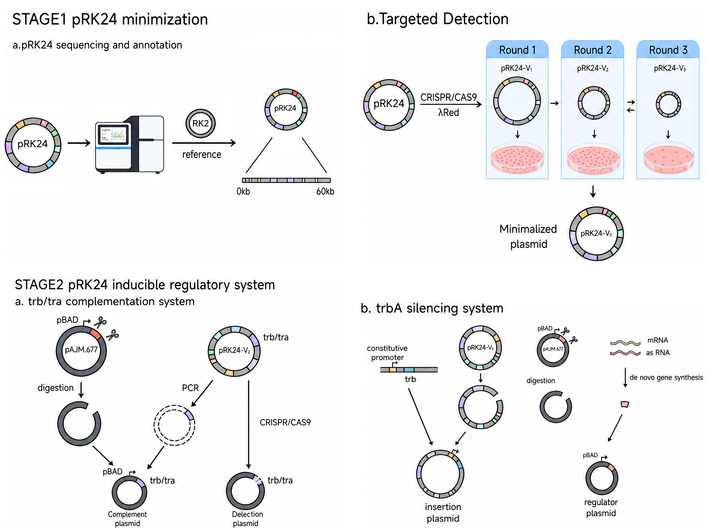

Abstract
Bacterial conjugation enables large-scale plasmid transfer between cells through direct cell-to-cell contact; however, the spontaneous transfer of conjugative plasmids is difficult to control, which limits their operability as tools for horizontal gene transfer. To achieve precise exogenous regulation of the constitutive transfer of conjugative plasmids between donors and recipients, we propose a design for an inducible bacterial conjugation system, in which the arabinose-inducible expression vector pAJM.677 regulates conjugation factors in trans, thereby taking over the conjugative transfer of the natural broad-host-range conjugative plasmid pRK24. To this end, we first completed the full-sequence annotation of pRK24 using the RK2 reference sequence, identified and mapped the genetic coordinates of the conjugative transfer elements and their regulatory elements, and revealed numerous functionally uncharacterized redundant regions and transposon remnants. Furthermore, using CRISPR/Cas9 in combination with λRed recombination, we performed three rounds of stepwise targeted deletion of the redundant sequences and obtained the minimized plasmid pRK24-v2, which retains intact conjugative and autonomous replication functions and exhibits a conjugation efficiency comparable to that of the wild type. We also found that korB deletion significantly impaired plasmid maintenance, thereby defining the functional boundary of minimization. On this basis, we propose a two-pronged regulatory strategy of trans-complementing the trb/tra transfer machinery and silencing the repressor TrbA, which provides a framework for the future construction of a complete inducible conjugation system.
Keywords: bacterial conjugation; horizontal gene transfer; pRK24; CRISPR/Cas9; inducible regulation

This schematic illustration was generated with AI and reviewed by the team. It does not represent experimental data.